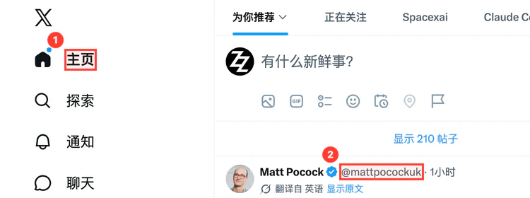
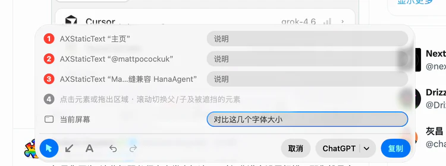

访达
文件、文件夹、边栏里的文件夹和磁盘，或窗口空白处——都是完整路径。
① folder · ~/Projects/ref/Sources/Ref/Overlay
Ref 是 macOS 菜单栏工具。按下热键冻住屏幕，点一点你想说的东西。Ref 自动读出它们是什么——哪个文件、哪个网址、哪个按钮、哪一行代码——编上号，连同你的说明合成一张自带图例的图，放进剪贴板。粘贴给 Cursor、ChatGPT、Claude 或同事就行。
免费 · 需要 macOS 26 或更高版本 · Developer ID 签名并经 Apple 公证 · 4.7 MB · 自动更新
意图：照 ② 的样式在 ③ 加一个导出按钮，代码放到 ① ├─ ① 新组件放这里 │└─ folder · ~/Projects/ledger/src/components · 30%×25%├─ ② 参考它的样式 │└─ AXButton “新建发票” · button.primary · 112×32 · Toolbar · src/components/Toolbar.tsx:18 · localhost:3100/invoices · 93%×13%├─ ③ 导出按钮放这里 │└─ 区域 · 66%×71% – 94%×88%├─ ④ 右边和表格对齐 │└─ 箭头 · 92%×69% 指向 96%×48%└─ ⑤ 文案：导出 CSV└─ 文字 · 52%×78%Ref · 2880×1800 px · com.apple.Safari “发票 — Ledger” · 2026-10-07 15:55
粘贴到任何能放图片的地方
它解决什么问题
想让 AI 或同事改屏幕上的某个东西，你通常得这样描述：
“把左边文件树里那个 Overlay 目录……不是，是 Sources 下面那个……参考 Safari 里那个登录按钮的样式，在右下角那块空白加个导出按钮。”
截图之后，对方看得到你指哪里，却看不到那个目录的真实路径、那个按钮属于哪个 app、那一行是哪个文件的第几行。这些信息还得你手动敲进去。
Ref 替你敲。你点到的每个元素，它都会读出那是什么，写进图下方的图例。你只需要补一句“想让它怎样”。
同一段话，用 Ref 标出来
意图：照 ② 的样式在 ③ 加一个导出按钮，代码放到 ① ├─ ① 把新模块放这里 │└─ folder · ~/Projects/ref/Sources/Ref/Overlay · 18%×36%├─ ② 参考它的样式 │└─ AXButton “Login” · com.apple.Safari · 78%×18%└─ ③ 导出按钮放这里└─ 区域 · 61%×67% – 82%×84%Ref · 2880×1800 px · com.apple.finder “Projects” · 2026-09-21 22:13
目标在前，引用在后：第一行是整张图的意图，下面挂着每条编号的说明，说明下面才是它指的东西——哪个元素、在哪里。
怎么用
没有主窗口，不用先打开什么。在任意界面按下热键，整块屏幕就是画布。
在任意界面按 ⌥⌘R（可改）。屏幕冻住，底部出现图例面板。只想截图并复制？快速连按两次即可。
button.primaryToolbar.tsx:18高亮框跟着光标下的元素走，旁边的卡片逐行列出 Ref 读到的内容。点击框选元素，拖拽框出区域；按 A 画箭头、T 放文字，编号接着往下排。
每放一个标记，面板里多出一行。按 Tab 进去写几个字，再按 ⏎ 回到画布；不想写就接着点下一处。说明边写边保存。
按 ⌘⏎ 完成。图片立刻进入剪贴板，图例画在图里。或者按 ⌘1…⌘5 直接发给 ChatGPT、Claude、WorkBuddy、QuickGPT 或 Grok Bot。


Ref 能读出什么
取决于你点到的 app。读到的东西原样写进图例，路径和网址一行放不下就折行，从不省略。
文件、文件夹、边栏里的文件夹和磁盘，或窗口空白处——都是完整路径。
① folder · ~/Projects/ref/Sources/Ref/Overlay
文件树里是文件的完整路径；编辑区里是文件名和光标所在行。
② MarkerRenderer.swift:142 ↳ ~/Projects/ref/Sources/Ref/Output
光标所在的那一行。
③ $ make release VERSION=0.3.4
地址栏读出网址；页面里的元素读出类型、文字和所在页面的网址，表格里还有列名和所在行，以及所属区块标题。开启浏览器自动化后，另外读出 CSS 选择器、尺寸、字体与颜色；本地开发的 React / Vue / Svelte / Angular 页面还能读到组件名和源文件位置。
④ AXButton “Login” · button.primary · 180×32 · 15px/600 #FFFFFF on #0D44E8 ↳ LoginForm · src/auth/LoginForm.tsx:42 · localhost:3100/login
控件类型、文字、accessibilityIdentifier、提示文本和设备名。app 嵌入 LookinServer 后，另外读出视图类名、所属控制器与 ivar、frame、字体、颜色、圆角和点击响应方法。
⑤ UILabel “合计 ¥128.00” · 41%×62% ↳ PriceLabel : UILabel · CartViewController.totalLabel · (16, 612) 200×22 pt · 17pt PingFangSC-Semibold #1A1C1F · 圆角 8
控件类型加标题或文字。有些 app 不向系统暴露界面信息，这时改用拖拽框选，再加一句文字说明。
⑥ AXButton “Login” · com.apple.Safari
标注时的细节
标注是一张表单，不是向导：每个标记一行，说明边写边存，面板上的东西不会自己消失。
光标下叠着好几个元素时，滚动滚轮在它们之间切换：往上是外层的父级，往下是子级和被挡住的元素。光标旁出现一张小地图，按层级列出它们，并按真实比例画出线框——大小和嵌套一眼可见。触控板每切一格轻震一下。
~/Projects/ledger按住 空格，高亮停在当前元素上，卡片换成点击后会记下的完整信息。把鼠标移过去点一行，就复制那一项——一个路径、一段文字——不截图也能拿到信息。
框选、箭头、文字都是一条编号记录，图上的 ① 和图例里的 ① 一一对应。文字放下就直接打字，边打边出现在画布上。
发送按钮记着上次用的那个，点它右端的小箭头换一个。ChatGPT 会新建一个 Codex 对话，说明预先填好，由你按发送。Grok Bot 打开你选的那个 Bot，第一次发时选一下就行。
不用等标注界面出现。复制的是第一次按下时的画面；多显示器时，复制第二次按下时鼠标所在的屏幕。
点错了 ⌘Z 撤销，⇧⌘Z 重做。想改说明，点已放置的徽标或面板里对应的行。Esc 逐层退出，有内容时要再按一次才会放弃。
只输出放了标记的屏幕，每块屏幕一张图，都是整屏，不裁剪。
open ref://capture open ref://settings open ref://permissions
Ref 支持 ref:// 链接，可以在 Raycast、Alfred、快捷指令或终端里调用。
图例
第一行是整张图的意图，下面挂着每条编号的说明，说明下面才是它指的东西。没写说明的编号直接写它指的东西；没写整体意图时，编号就是顶层。
意图：照 ② 的样式在 ③ 加一个导出按钮，代码放到 ① ├─ ① 把新模块放这里 │└─ folder · ~/Projects/ref/Sources/Ref/Overlay · 18%×36%├─ ② 参考它的样式 │└─ AXButton “Login” · com.apple.Safari · 78%×18%├─ ③ 导出按钮放这里 │└─ 区域 · 61%×67% – 82%×84%├─ ④ 样式从这里来 │└─ 箭头 · 66%×62% 指向 78%×22%└─ ⑤ 图标用 square.and.arrow.up└─ 文字 · 62%×88%Ref · 2880×1800 px · com.apple.finder “Projects” · 2026-09-21 22:13
图例画在图里。粘贴到支持图片的地方——Cursor、ChatGPT、飞书——一张图就够。
图例的短版：你写的整体说明、截图 @路径，然后每条编号一行——你的说明，一个破折号，Ref 读到的东西。
路径、网址、选择器和你写的说明都完整画出，一行放不下就折到下一行。只有从屏幕上读到的大段文字会截短，因为截图里本来就有。
权限与隐私
不会持续录屏，也不会上传任何内容。读到的信息只写进那张图，图只进你的剪贴板。
按热键时给每个显示器拍一张截图。
没有它：无法开始标注，按热键会提示前往系统设置。
识别光标下的控件、文件、文字。
没有它：仍能截图、框选区域、画箭头、写文字，只是框选不带元素信息。
辅助功能拿不到文件路径时，向访达问一下。
仅影响访达里少数拿不到路径的情况；首次需要时 macOS 会询问一次。
点“允许…”后，Ref 不弹系统询问，直接打开系统设置对应的页面，并在窗口旁放一块小面板，只写当前这一步。开关一打开，Ref 自己会察觉、在面板上确认，然后回到你出发的窗口。只有在 macOS 确实要求重新打开 Ref 时，才会出现“重新启动 Ref”按钮。
设置
热键，和登录时启动。因为只有你能决定它们。
其余都由 Ref 自己决定：标注一律是红色，靠编号区分；图例里的固定用词跟随系统语言；输出总是整屏，只进剪贴板；更新自动完成。
更新
Ref 每天检查一次 GitHub Releases，有新版本就自己下载、校验签名、装好并重新启动，重启后提示“已更新到 Ref x.y.z”。正在标注时不会打断你。
想立刻查，用菜单栏 → “检查更新…”，会附带这一版的更新说明，由你点“安装更新”或“稍后”。用 Homebrew 装的也一样会自己更新。
快捷键速查
| ⌥⌘R | 开始标注 / 完成并复制；快速连按两次直接截图并复制 |
|---|---|
| 点击 / 拖拽 | 框选元素 / 框选区域 |
| 滚轮 | 在光标下的元素之间切换：往上是父级，往下是子级和被遮挡的元素 |
| 按住 空格 | 锁住当前高亮的元素，点信息卡里的一行复制那一项 |
| F A T | 框选工具 / 箭头工具 / 文字工具 |
| ⌘Z ⇧⌘Z | 撤销 / 重做，编号不重排 |
| Tab | 进入印着 Tab 的那一行说明；在输入框中往下走到下一条、“当前屏幕”和按钮 |
|---|---|
| ⏎ | 画布上进入当前那一行说明；输入框中回到画布。从不结束标注 |
| ⌘⏎ | 完成并复制 |
| ⌘1 … ⌘5 | 完成并发给 ChatGPT / Claude / WorkBuddy / QuickGPT / Grok Bot |
| Esc | 退出一层：发送列表 / 锁住的高亮 → 输入框 → 画布 → 放弃；有内容时再按一次才放弃 |
| ⌘0 | 直接取消 |
安装
Ref 没有主窗口，启动后只在菜单栏出现一个图标。第一次启动会打开 设置 → 权限，逐项说明需要哪些权限、各自做什么。
一行命令。以后 brew upgrade --cask ref 也能更新，Ref 自己也会更新。
装好 Xcode 26，在仓库目录执行 make install，会打包并安装到 /Applications。
支持
通常是“屏幕录制”权限没开，或者授权后还没重新打开 Ref；按热键时 Ref 会直接打开 设置 → 权限。热键也可能和别的 app 冲突，去 设置 → 通用 换一个。
“辅助功能”权限没开。菜单栏 → “权限…” 进去允许即可。
有些 app 不向系统暴露界面信息（比如部分沙盒应用、自绘界面的应用），Ref 只能拿到控件类型。改用拖拽框选，再加一句文字说明。
需要两步开启：在 Ref 设置里允许“浏览器自动化”，再在浏览器里打开“允许 Apple 事件中的 JavaScript”（Chrome：菜单栏的 显示 › 开发者；Safari：设置 › 开发者）。Ref 只在你点击标记时读一次被点中的元素，不会修改页面。
剪贴板里只有图片，目标输入框不支持图片就贴不进去。换个支持图片的地方粘贴。
Chromium / Electron 应用（Chrome、VS Code、Slack、Figma 这类）第一次点进去会有短暂延迟，之后正常。